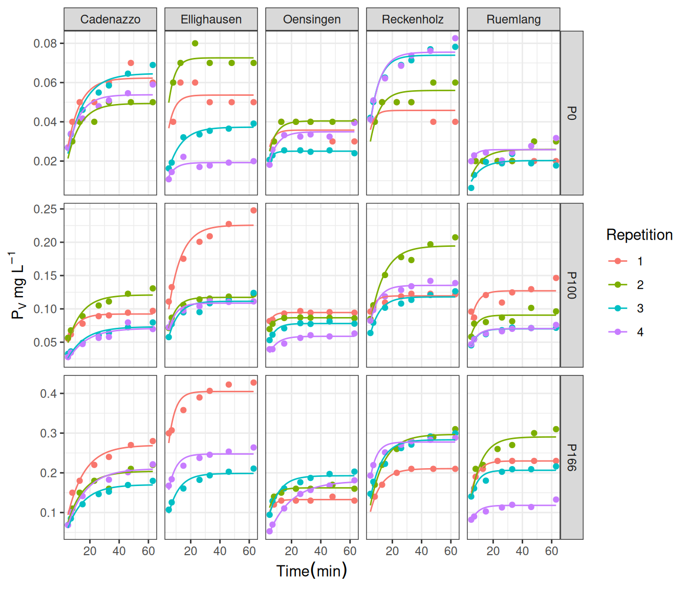
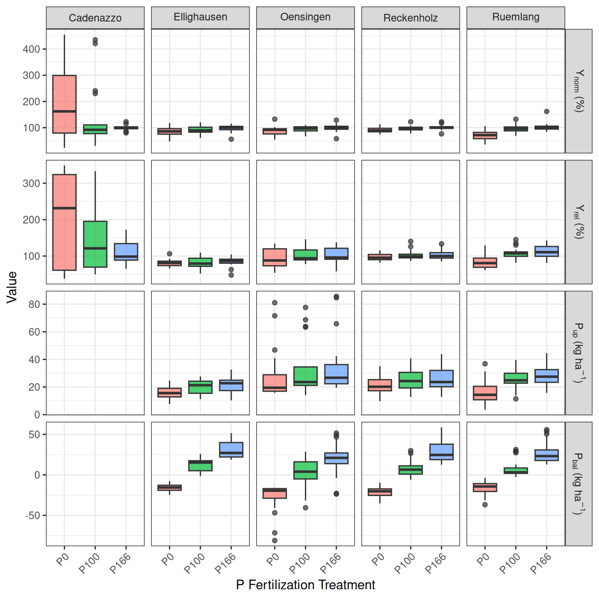
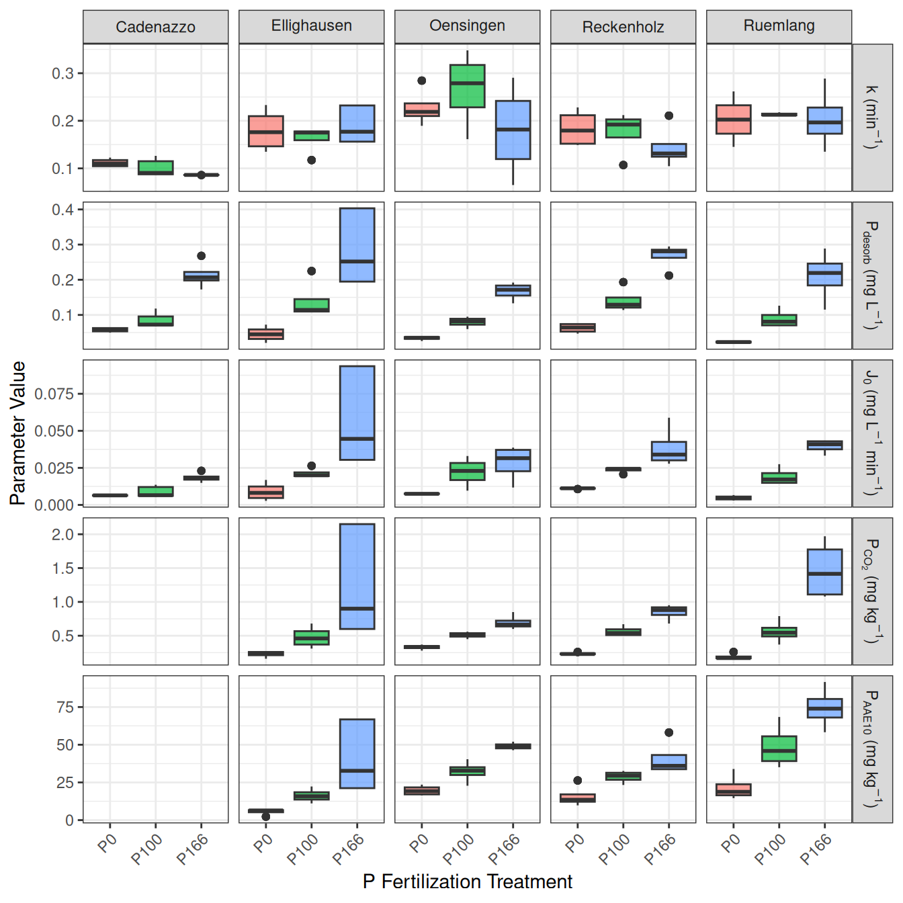

create_coef_table <- function(lmer_models,
covariate_order = NULL,
covariate_labels = NULL, # NEU: Benannter Vektor für Zeilennamen
model_labels = NULL,
descriptor = "Response") { # NEU: Benannter Vektor für Spaltennamen
# Extract coefficients and p-values (Ihre Originalfunktion, keine Änderung hier)
extract_coef_info <- function(model) {
# ... (keine Änderung, Ihr Code bleibt hier)
coef_matrix <- summary(model)|> coef()
estimates <- coef_matrix[, 1]
p_values <- coef_matrix[, ncol(coef_matrix)]
formatted_coef <- sapply(seq_along(estimates), function(i) {
est_str <- sprintf("%.3f", estimates[i])
stars <- if (p_values[i] < 0.001) "***" else
if (p_values[i] < 0.01) "** " else
if (p_values[i] < 0.05) "* " else ""
paste0(est_str,stars)
})
names(formatted_coef) <- rownames(coef_matrix)
return(formatted_coef)
}
# Extract R-squared values (Ihre Originalfunktion, keine Änderung hier)
extract_r_squared <- function(model) {
# ... (keine Änderung, Ihr Code bleibt hier)
r2_values <- MuMIn::r.squaredGLMM(model) # MuMIn:: hinzugefügt für Klarheit
return(c(
R2m = sprintf("%.3f", r2_values[1, "R2m"]),
R2c = sprintf("%.3f", r2_values[1, "R2c"])
))
}
# Daten extrahieren (Ihr Originalcode)
all_coefs <- lapply(lmer_models, extract_coef_info)
all_r_squared <- lapply(lmer_models, extract_r_squared)
all_covariate_names <- unique(unlist(lapply(all_coefs, names)))
if (is.null(covariate_order)) {
covariate_order <- c("(Intercept)", sort(all_covariate_names[all_covariate_names != "(Intercept)"]))
}
covariate_order <- covariate_order[covariate_order %in% all_covariate_names]
final_order <- c(covariate_order, "R2m", "R2c")
# Matrix erstellen (Ihr Originalcode)
results_matrix <- matrix("",
nrow = length(final_order),
ncol = length(lmer_models),
dimnames = list(final_order, names(lmer_models)))
# Matrix füllen (Ihr Originalcode)
for (model_name in names(lmer_models)) {
model_coefs <- all_coefs[[model_name]]
for (covar in names(model_coefs)) {
if (covar %in% covariate_order) {
results_matrix[covar, model_name] <- model_coefs[covar]
}
}
r2_values <- all_r_squared[[model_name]]
results_matrix["R2m", model_name] <- r2_values["R2m"]
results_matrix["R2c", model_name] <- r2_values["R2c"]
}
# --- NEU: Zeilen- und Spaltennamen ersetzen ---
# Ersetze die Zeilennamen (Kovariaten), falls covariate_labels übergeben wurde
if (!is.null(covariate_labels)) {
# Finde die Übereinstimmungen in den aktuellen Zeilennamen
row_matches <- match(rownames(results_matrix), names(covariate_labels))
# Ersetze nur die, die gefunden wurden
new_rownames <- rownames(results_matrix)
new_rownames[!is.na(row_matches)] <- covariate_labels[row_matches[!is.na(row_matches)]]
rownames(results_matrix) <- new_rownames
}
# Ersetze die Spaltennamen (Modelle), falls model_labels übergeben wurde
if (!is.null(model_labels)) {
col_matches <- match(colnames(results_matrix), names(model_labels))
new_colnames <- colnames(results_matrix)
new_colnames[!is.na(col_matches)] <- model_labels[col_matches[!is.na(col_matches)]]
colnames(results_matrix) <- new_colnames
}
# --- Ende der neuen Sektion ---
# Convert to data frame for kable
results_df <- data.frame("Predictor" = rownames(results_matrix),
results_matrix,
check.names = FALSE, # Verhindert, dass R Spaltennamen ändert
stringsAsFactors = FALSE)
results_df
}1 Results
The results of this study are presented in two main parts. First, the development and validation of the phosphorus (P) desorption kinetic model are detailed, justifying the final modeling approach. Second, the descriptive trends of both agronomic outcomes and soil P parameters in response to long-term fertilization and site differences are explored visually. Finally, the predictive power of the kinetic and standard P parameters is formally evaluated using linear mixed-effects models.
1.1 Establishment of the P-Desorption Kinetic Model
The primary goal was to derive two key parameters for each soil sample: the desorbable P pool (\(P_{desorb}\)) and the rate constant (\(k\)). The analysis proceeded in two stages: an initial test of a linearized model, followed by the implementation of a more robust non-linear model.
1.1.1 Initial Approach: Failure of the Linearized Model
Following the conceptual framework of Flossmann and Richter (1982), the first-order kinetic equation was linearized. A core assumption of this model is that the linear relationship must pass through the origin (0/0) of the coordinate system. To test this, linear models were fitted to the transformed data for each sample individually. The results revealed a systematic failure of this assumption, as the estimated intercepts for the majority of samples were highly significantly different from zero (p < 0.05). This consistent statistical deviation indicated that the linearized approach was not a valid representation of the data. The visual evidence in Figure 1 supports this conclusion.

1.1.2 Final Approach: Successful Non-Linear Model
Given the statistical failure of the linearized model, a direct non-linear modeling approach was adopted to estimate both \(P_{desorb}\) and \(k\) simultaneously from the untransformed data. This approach does not rely on the assumption of a zero intercept and proved to be far more successful, accurately capturing the curvilinear shape of the desorption data for nearly all samples (Figure 2). The final parameters were extracted from a non-linear mixed-effects model (nlme) to account for the hierarchical data structure. These final nlme-derived coefficients were used for all subsequent analyses.

1.2 Comparison with Isotopic Exchange Kinetics (IEK)
To validate the newly derived kinetic parameters against an established benchmark, the capacity (\(P_{desorb}\)) and kinetic (\(k\)) parameters were compared to data from Isotopic Exchange Kinetics (IEK) studies previously conducted on the same long-term trial sites by Demaria et al. (2013). This comparison aims to determine if the simpler, non-equilibrium desorption method used in this thesis captures similar aspects of soil P dynamics as the more complex, equilibrium-based IEK method.
The size of the desorbable P pool (\(P_{desorb}\)) was compared against the long-term isotopically exchangeable P pool measured after 7 days (\(E_{7d}\)). The desorption rate constant (\(k\)) was compared against the IEK kinetic parameter measured after 24 hours (\(n_{1d}\)). Spearman’s rank correlation was used to robustly test for monotonic trends between the different methods.


The analysis revealed a statistically significant, moderate positive correlation between the capacity parameters, \(P_{desorb}\) and \(E_{7d}\) (Figure 3). The Spearman’s rank correlation coefficient was 0.4 with a p-value of < 0.001.
Similarly, a statistically significant, moderate positive correlation was found between the kinetic parameters, \(k\) and \(n_{1d}\) (Figure 3). The Spearman’s rank correlation coefficient was 0.36 with a p-value of < 0.001.
These results indicate that the simpler, non-equilibrium desorption method used in this study successfully captures both the capacity and intensity aspects of soil P lability, providing results that are consistent with the more complex, equilibrium-based IEK method reported by (Demaria et al., 2013).
1.3 Effects of Fertilization on Agronomic and Soil Parameters
Having established a robust method to determine the kinetic parameters, the next step was to explore the effects of the long-term P fertilization treatments on both the agronomic outcomes and the soil P test parameters.
1.3.1 Agronomic Responses to P Fertilization
The long-term application of different P fertilization levels had a pronounced impact on the primary agronomic outcomes, including two different metrics for yield, P Uptake (\(P_{up}\)), and P Balance (\(P_{bal}\)), though the response varied considerably between sites (Figure 4).

Yield Metrics (\(Y_{norm}\) and \(Y_{rel}\)): Both yield metrics showed a generally positive response to P fertilization. The site-normalized yield (\(Y_{norm}\)) shows the response relative to the site’s potential for that year, with most yields plateauing around the Norm (100%) treatment. The national-normalized yield (\(Y_{rel}\)) provides a broader context, showing how yields at each site compare to the national average.
P Uptake (\(P_{up}\)): P uptake by crops followed a similar trend to yield, increasing with fertilization, often continuing to increase at the highest fertilization levels, suggesting luxury consumption.
P Balance (\(P_{bal}\)): The P balance showed a strong, linear relationship with fertilization. The Zero and Deficit treatments resulted in a negative balance (mining soil P), while the Elevated and Surplus treatments led to a significant P surplus.
1.3.2 Soil P Parameters as a Function of P Fertilization
The different soil P test parameters, including the standard STP methods and the newly derived kinetic parameters, all responded to the long-term fertilization treatments (Figure 5).

Standard STPs (\(P_{CO_2}\) and \(P_{AAE10}\)): Both standard soil P tests showed a clear and consistent increase with rising P fertilization levels across all sites, confirming their sensitivity to management.
Kinetic Parameters (\(k\), \(P_{desorb}\), and \(J_0\)): Desorbable P (\(P_{desorb}\)): This parameter behaved very similarly to the standard STPs, increasing steadily with P fertilization and confirming its role as a “capacity” indicator.
Rate Constant (\(k\)): The rate constant showed a more complex pattern, with no strong, consistent trend with fertilization. This suggests that while fertilization increases the amount of available P, it may not change the intrinsic release rate. Initial P Flux (\(J_0\)): As the product of \(P_{desorb}\) and \(k\), this parameter integrates both capacity and intensity. It showed a strong positive response to fertilization, driven primarily by the increase in \(P_{desorb}\).
These initial observations suggest that the kinetic parameters, particularly the rate constant \(k\), may provide unique information about the soil’s P dynamics not captured by the static tests P-CO2 and P-AAE10 alone. The next section will use formal statistical models to test these relationships.
1.4 Predicting P Parameters from Soil Properties
To understand the underlying drivers of the standard and kinetic P parameters, and to test Hypotheses 1b and 2b, a series of linear mixed-effects models were fitted. Each model predicted one of the P parameters based on the core soil properties: organic carbon (\(C_{org}\)), clay content, silt content, pH, and dithionite-extractable Al (\(Al_d\)) and Fe (\(Fe_d\)). The results are summarized in Table 1.
| Predictor | \(P_{desorb}\) | \(k\) | \(J_0\) | \(P_{CO_2}\) | \(P_{AAE10}\) |
|---|---|---|---|---|---|
| Intercept | 21.444 | 0.454 | 21.189 | 14.014 | 23.126 |
| \(Al_{d}\) | -8.706*** | -0.072*** | -8.631*** | -4.417*** | -9.473*** |
| \(Fe_{d}\) | -1.068*** | 0.005 | -1.084*** | -0.845*** | -0.606*** |
| Clay | -0.006*** | -0.016*** | -0.085*** | 0.015 | -0.029*** |
| \(C_{org}\) | 0.612 | 0.137 | 1.250 | 0.269 | 1.454 |
| pH | -0.018*** | -0.021*** | -0.092*** | 0.124 | 0.012 |
| Silt | -0.000*** | 0.004 | 0.008 | -0.015*** | -0.049*** |
| \(R^2_m\) | 0.393 | 0.212 | 0.368 | 0.362 | 0.494 |
| \(R^2_c\) | 0.996 | 0.915 | 0.993 | 0.995 | 0.997 |
The analysis reveals that the capacity-based P pools and the kinetic rate constant are controlled by different sets of soil properties, strongly supporting the hypotheses.
In line with Hypothesis 2b, the kinetic capacity parameter, Desorbable P (\(P_{desorb}\)), showed a highly significant negative relationship with both dithionite-extractable iron (\(Fe_d\)) and aluminum (\(Al_d\)). This provides strong evidence that the total pool of free oxides, which represent the primary P sorption surfaces in the soil, is a key factor controlling the size of the readily desorbable P pool.
Also confirming Hypothesis 2b, the Rate Constant (k) was governed by a different set of properties. It was not significantly influenced by the free oxides but instead showed a significant negative relationship with Clay content and a positive relationship with organic carbon (\(C_{org}\)). This clearly distinguishes the kinetic component from the capacity component, suggesting that while oxides control how much P can be held, soil texture and organic matter influence how fast it can be released.
The standard STP methods showed patterns consistent with Hypothesis 1b. Organic Carbon (\(C_{org}\)) had a highly significant positive effect on \(P_{AAE10}\), and pH had a significant negative effect, as predicted. The relationship of the STP measures with the dithionite-extractable oxides was less consistent than that of \(P_{desorb}\), with only \(P_{AAE10}\) showing a significant negative link to \(Al_d\).
1.5 Predictive Modeling of Agronomic Outcomes
To formally evaluate the predictive power of the standard STP methods against the kinetic parameters, a series of linear mixed-effects models were fitted for each of the primary agronomic response variables. To test the central hypotheses of this thesis, the predictive power of the kinetic parameters was directly compared against that of the standard STP methods for several key agronomic outcomes. For each response variable—Normalized Yield (\(Y_{rel}\)), P Uptake (\(P_{up}\)), and P Balance (\(P_{bal}\))—a set of competing linear mixed-effects models was constructed.
To ensure a fair comparison, all models shared an identical random effects structure ((1|year) + (1|Site) + (1|Site:block)), differing only in their fixed effects. Four distinct models were evaluated: \(P_{CO_2}\) Model: Used the standard water-soluble P test as the sole predictor. \(P_{AAE10}\) Model: Used the standard chelate-extractable P test as the sole predictor. STP Interaction Model: Included both standard tests and their interaction term (\(P_{CO_2} * P_{AAE10}\)) to capture their combined effect. Kinetic Model: Used the log-transformed desorbable P pool (\(log(P_{desorb})\)), the rate constant (k), and their interaction (\(J_0\)) as predictors.
The performance of these models for each agronomic outcome is presented in the following sections.
1.5.1 Anomaly in the Cadenazzo Yield Data
A preliminary visual analysis of the agronomic data revealed a significant anomaly at the Cadenazzo (CAD) site. As shown in Figure 6, the Cadenazzo site exhibited substantially higher overall yields than all other locations. More critically, the yield response to P fertilization did not follow the expected agronomic trend. The zero-fertilizer treatment (P0) showed the highest median yield, while the surplus treatment (P166) was among the lowest.
A simple label swap between P0 and P166 was hypothesized and tested (Figure 7). While this correction established a more monotonic trend, the resulting pattern remained questionable, with the corrected P166 yield being inexplicably higher than the P100 and P133 treatments, which is not a typical biological response.
Unfortunately, a deeper investigation into the cause of this anomaly was impossible, as the corresponding soil analysis data (STPs, organic carbon, etc.) for the Cadenazzo site were unavailable due to sample loss. Without this data, it cannot be determined whether the issue stems from a persistent micro-site anomaly, a more complex data recording error, or other unknown factors. Given these unresolved inconsistencies and the site’s unusually high productivity, the Cadenazzo data was retained in the models but is recognized as a significant source of unexplained variance that likely contributed to the poor predictive performance of all models for yield-related metrics like \(Y_{norm}\) and \(Y_{rel}\).


1.5.2 Predicting Site-Normalized Yield (\(Y_{norm}\))
The analysis reveals a clear and striking difference between the predictive power of the standard STP methods and the kinetic parameters for site-normalized yield, as seen in Table 2.
| Predictor | \(P_{CO_2}\) | \(P_{AAE10}\) | STP-interaction | kinetic |
|---|---|---|---|---|
| Intercept | 1.059*** | 0.532*** | 1.096*** | 0.980 |
| \(k\) | 2.262 | |||
| \(J_0\) | 0.931 | |||
| \(P_{desorb}\) | -0.063 | |||
| \(P_{AAE10}\) | 0.120*** | -0.006 | ||
| \(P_{CO_2}\) | 0.162*** | 0.137 | ||
| \(P_{CO_2} \times P_{AAE10}\) | 0.016 | |||
| \(R^2_m\) | 0.218 | 0.198 | 0.220 | 0.014 |
| \(R^2_c\) | 0.358 | 0.474 | 0.365 | 0.360 |
The analysis for site-normalized yield showed that both the $P_{CO_2}$ and $P_{AAE10}$ models had highly significant coefficients and explained 21.8% and 19.8% of the variance, respectively. The combined STP-interaction model performed best, explaining 22% of the variance. In contrast, the kinetic model had a marginal R² of only 1.4%, and none of its parameters were statistically significant.
1.5.3 Predicting National-Normalized Yield (\(Y_{rel}\))
The models predicting national-normalized yield (\(Y_{rel}\)) reveal that both standard and kinetic soil phosphorus tests struggle to explain the variance in crop yields on their own, though standard tests show slightly better performance in this context.
| Predictor | \(P_{CO_2}\) | \(P_{AAE10}\) | STP-interaction | kinetic |
|---|---|---|---|---|
| Intercept | 104.862*** | 75.343*** | 130.274*** | 56.375 |
| \(k\) | 377.498** | |||
| \(J_0\) | 171.507** | |||
| \(P_{desorb}\) | -27.486* | |||
| \(P_{AAE10}\) | 7.111** | -6.537 | ||
| \(P_{CO_2}\) | 8.853** | 23.091 | ||
| \(P_{CO_2} \times P_{AAE10}\) | -3.110 | |||
| \(R^2_m\) | 0.074 | 0.063 | 0.078 | 0.022 |
| \(R^2_c\) | 0.569 | 0.537 | 0.596 | 0.439 |
1.5.3.1 Performance of Standard STP Methods
The models based on standard soil tests, $P_{CO_2}$ and $P_{AAE10}$, were significant predictors, explaining 7.4% and 6.3% of the variance in yield, respectively. The model including their interaction term performed slightly better, explaining 7.8% of the variance. The model based on kinetic parameters demonstrated lower predictive power, with a marginal R² of 2.2%. A critical observation across all models is the large discrepancy between the marginal R² (\(R^2_m\)) and the conditional R² (\(R^2_c\)). For instance, in the best-performing STP model, the marginal R² is only 0.078, but the conditional R² is 0.596.
1.5.4 Predicting P-Uptake (\(P_{up}\))
When predicting P-uptake, both the standard and kinetic models demonstrate similarly weak predictive power, with none of the approaches standing out as superior.
| Predictor | \(P_{CO_2}\) | \(P_{AAE10}\) | STP-interaction | kinetic |
|---|---|---|---|---|
| Intercept | 27.522*** | 8.090 | 30.632* | 29.599*** |
| \(k\) | 22.622 | |||
| \(J_0\) | 11.928 | |||
| \(P_{desorb}\) | 1.954 | |||
| \(P_{AAE10}\) | 4.824*** | -0.805 | ||
| \(P_{CO_2}\) | 5.177*** | 8.069 | ||
| \(P_{CO_2} \times P_{AAE10}\) | -0.814 | |||
| \(R^2_m\) | 0.064 | 0.073 | 0.065 | 0.064 |
| \(R^2_c\) | 0.625 | 0.603 | 0.623 | 0.648 |
When predicting P-uptake, the individual standard soil tests, \(P_{CO_2}\) and \(P_{AAE10}\), were significant positive predictors, explaining 6.4% and 7.3% of the variance, respectively. The interaction model did not improve the explained variance. The kinetic model performed on par with the standard individual tests, explaining 6.4% of the variance, though none of its parameters were individually significant. As with yield, a large difference between the marginal and conditional R² values was observed across all models.
1.5.5 Predicting P-Balance (\(P_{bal}\))
The prediction of the P-Balance (\(P_{bal}\)) reveals a stark and decisive contrast between the kinetic and standard STP approaches, providing the strongest evidence in favor of the kinetic methodology.
| Predictor | \(P_{CO_2}\) | \(P_{AAE10}\) | STP-interaction | kinetic |
|---|---|---|---|---|
| Intercept | 4.441 | 7.691 | 3.649 | 43.833*** |
| \(k\) | 84.993 | |||
| \(J_0\) | 33.029 | |||
| \(P_{desorb}\) | 16.947*** | |||
| \(P_{AAE10}\) | -0.794 | 0.187 | ||
| \(P_{CO_2}\) | -0.928 | -2.442 | ||
| \(P_{CO_2} \times P_{AAE10}\) | 0.462 | |||
| \(R^2_m\) | 0.001 | 0.001 | 0.001 | 0.572 |
| \(R^2_c\) | 0.810 | 0.807 | 0.811 | 0.744 |
The kinetic model emerged as a strong predictor of the P-Balance, explaining 57.2% of the variance, with the desorbable P pool (\(P_{desorb}\)) being a highly significant predictor. In contrast, all models based on the standard STP methods had marginal R² values of 0.1% and no significant predictors. The conditional R² for the STP models was high (around 0.81), while the kinetic model had both a high marginal R² (0.572) and a high conditional R² (0.744).
References
Demaria, P., Sinaj, S., Flisch, R., & Frossard, E. (2013). Soil Properties and Phosphorus Isotopic Exchangeability in Cropped Temperate Soils. Communications in Soil Science and Plant Analysis, 44(1–4), 287–300. https://doi.org/10.1080/00103624.2013.741896